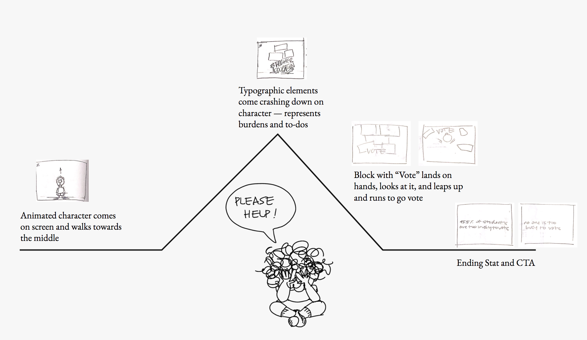
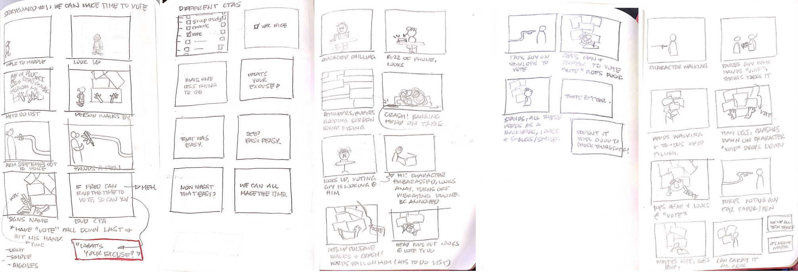
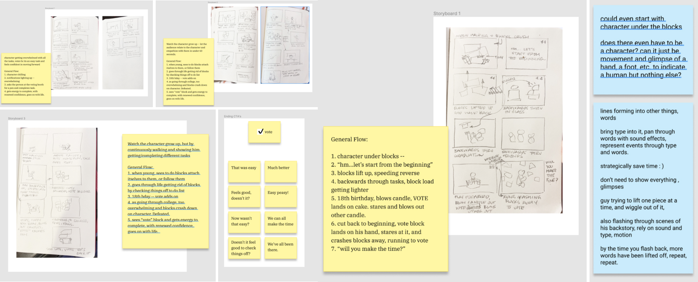
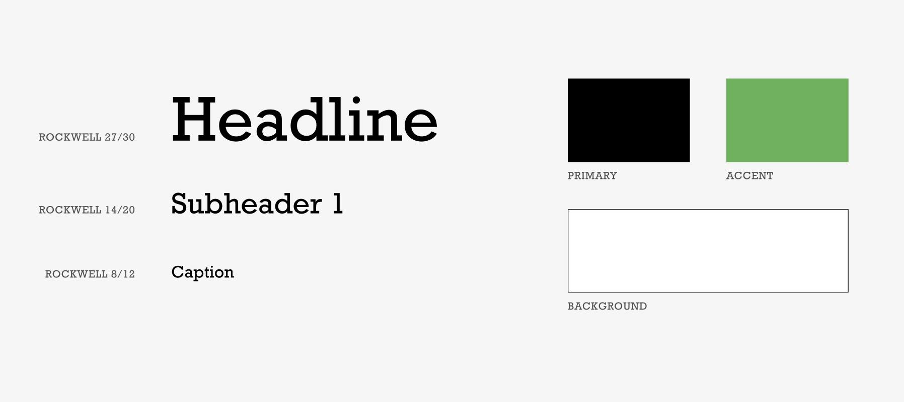

caroline song :-)
communications designer @ carnegie mellon
Fall 2020, 6 weeks
45.5 percent of young students claim they are too busy to vote.
We are the largest generation in America and despite that, the least likely to vote. Partnering with studentvote.org, my goal was to create a visual campaign that would incentivize and empower these young students who state they are “too busy”, to vote in the upcoming election.
I created a campaign that draws from feelings of warmth and nostalgia with motion graphics and illustrations. To differentiate my voting campaign from others, I decided to approach this project in a lighthearted, unintimidating manner—complete with cartoon characters! In juxtaposing tones, I also focused on addressing the importance and seriousness of the message: We all must do our civic responsibility because there is absolutely no one who is too busy to vote.
Check out my unfiltered process thoughts here →
Adobe After Effects
Adobe Photoshop
Figma
Procreate
Stop Motion
Illustration
Brand Identity
User Research
Individual
Animation PSA –
In this 53 second animation, I address how all students can easily get overwhelmed by all the things on their plate—it's understandable. But come November 7th, nothing is more important than voting and that should be the primary task in hand.
Social Media Campaign –
To take advantage of my target audience's heavy usage of social media platforms, I expanded my branding to create this campaign. The main message of these designs remain the same, using moments from the video and also bringing in more factual, educational aspects for viewers to scroll through as well.
Social Media Posts
Instagram + Facebook Mockup
Merchandise –
Through creating some sample merchandise, I thought about what items my target audience uses and enjoys the most. Through my merchandise, I wanted to remain playful and relatable, which are characteristics that I feel that young students gravitate towards the most.
01 Concept + Inspiration –
I wanted to approach this PSA and brand system in an unexpected manner, compelling the users to register + vote with feelings of nostalgia and warmth.

02 Storyboarding –
I first started by outlining my general story arc to include a beginning, a climax, and resolution, followed by my final call to action.

Because I planned on created a stop motion animation purely with my own illustrations, I wanted to make sure to nail down my exact storyline before rendering each drawing. I used simple paper sketches in order to brainstorm and finalize my idea.
 
03 Visual Branding –
To expand my compaign further, I designed these guidelines to use throughout my creation of social media + merchandise assets.

04 Final Thoughts –
I learned what an integral part storyboarding plays in the animation process. It allowed me to think through the entire storyline, laying each scene out in such a way that let me consider every factor and how it plays into the final animation. And thinking about the stop-motion style I chose to pursue, I was able to finalize my entire detailed story so to draw and animate as efficiently as possible.
Expanding to think of my entire branding system, I learned how to make design decisions as to what elements to bring over in order to keep the cohesiveness in each item in my visual system, while keeping each element interesting, exciting, and a little bit new for the audience.